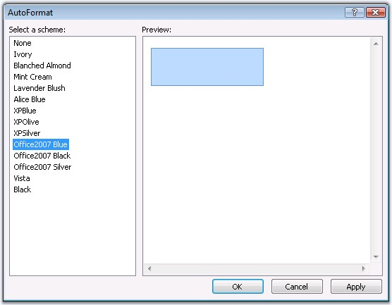
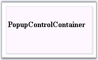

The PopupControlContainer provides pre-defined set of styles that can be applied to your control just on a click of the button. You can set the desired look and feel for the control that includes some popular styles too.
Right clicking the control and selecting the Auto Format... option opens the following Auto Format dialog box.

Figure 413: Auto Format option for the Popup Control Container
The left pane lists the various pre-defined style scheme that are available. The right pane shows the preview of the currently selected scheme. Select the required style, and then click OK to apply the selected scheme to the control.
Example of a pre-defined look and feel
The following image shows the PopupControlContainer with Lavender Blush style setting.

Figure 414